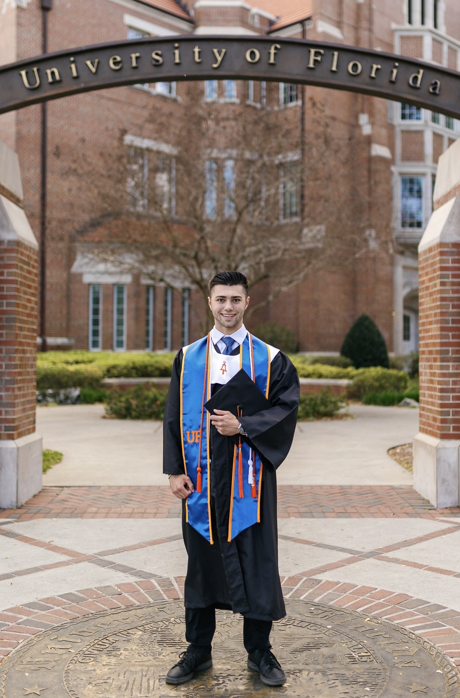

University of Florida — B.S. Mechanical Engineering · GPA 3.97
My name is Bryce Addeo, and I recently earned my Bachelor of Science in Mechanical Engineering from the University of Florida. Throughout my academic and professional journey, I have developed a strong foundation for process optimization, mechanical design and leading team projects. My industry experience includes my role as a Manufacturing Performance Engineer Intern at PIM Brands and a Customer Sales Associate at General Nutrition Company. During my internship at PIM Brands, I improved packaging line efficiency and applied continuous improvement methodologies to the mass production of Welch's Fruit Snacks. More specifically, I developed a manual with optimized machine settings for my packaging line and led trainings on problem solving techniques to the line operators. In my time at the University of Florida, I have further honed my engineering abilities through numerous projects of varying topics. Most notably, I led a team of nine engineers to design and prototype a tether deployment system for connecting two 12U satellites to provide stable orbital mechanics and generate artificial gravity. Other significant projects included manufacturing and testing an oscillating air engine, finite element analyses of a truss structure and torque arm, developing a machine learning model to assist in sea turtle conservation and writing reports for laboratory experiments based on mechanics of materials, controls of dynamic systems and thermodynamics. In addition to my coursework, I assisted my peers as a Finite Element Analysis Teaching Assistant and became part of the Tau Beta Pi Honor Society for being in the top 1/8th of my class. Going forward, I am highly interested in pursuing a career in the defense industry due to my passion for using my technical skills to contribute to the protection of our country and people.

Work Experiences and Projects:
Select any entry below to view details, reports, and documentation.
Open to full-time opportunities in mechanical and defense engineering.